Comparación
Vigente, 17177a1, r2 y r2 con el cierre de dirección
Capturas reales del mismo ancho. Ninguna versión está publicada: la vigente es la de producción; las otras son locales.
Qué cambió con el cierre
| Pieza | r2 (ronda anterior) | r2 con el cierre |
|---|---|---|
| GrowiWeb | Sitio de muestra de un consultorio con la plantilla actual | Centro Ribera: demo de calidad portfolio (zona del cuerpo, ilustraciones, turnero en cuatro pasos), navegable en escritorio y celular, junto al taller de cerámica |
| GrowiFlow | Tres escenas sueltas, con poco peso visual | Un proceso completo en cinco pasos: llega la consulta, se anota sola, la confirmás vos, sale el recordatorio, llega el resumen semanal. La planilla cambia de estado y el resultado se ve |
| Combo | Dos capturas chicas lado a lado | Una secuencia de cuatro pasos con capturas reales grandes: el sitio, el WhatsApp, la agenda y la caja de GrowiApp. Aclara que el puente es el WhatsApp y que el paso de la agenda es manual |
| Home en móvil | Pestañas en desplazamiento horizontal; el producto aparecía recién al final de la primera pantalla | Pestañas en cuadrícula 2×2 sin desplazamiento; el titular y el párrafo son más chicos y la demo asoma en la primera pantalla |
| Prueba social | Sección aparte de Colo Café, lejos de GrowiApp | Caso real dentro de la pestaña GrowiApp, junto a la demo |
| Contenido redundante | Caso, garantía en ticket y 8 preguntas frecuentes | Se quitó la sección aparte del caso y el ticket de garantía; 6 preguntas frecuentes |
| Páginas /web/ y /app/ | Mostraban una demo distinta de la home y la lista del hero se rompió por un choque de clases que introduje | Unificadas en Centro Ribera; defecto corregido (lo detectó la crítica independiente) |
| Paquete de revisión | Dependía de la raíz del repositorio (/fonts, shared.js, demos de GrowiWeb) y de otra carpeta de evidencia | Autocontenido: vendor/, demos propias y evidencia dentro de la carpeta. Se sirve desde la propia carpeta sin errores 404 |
Correcciones finales: lo que se ve ahora
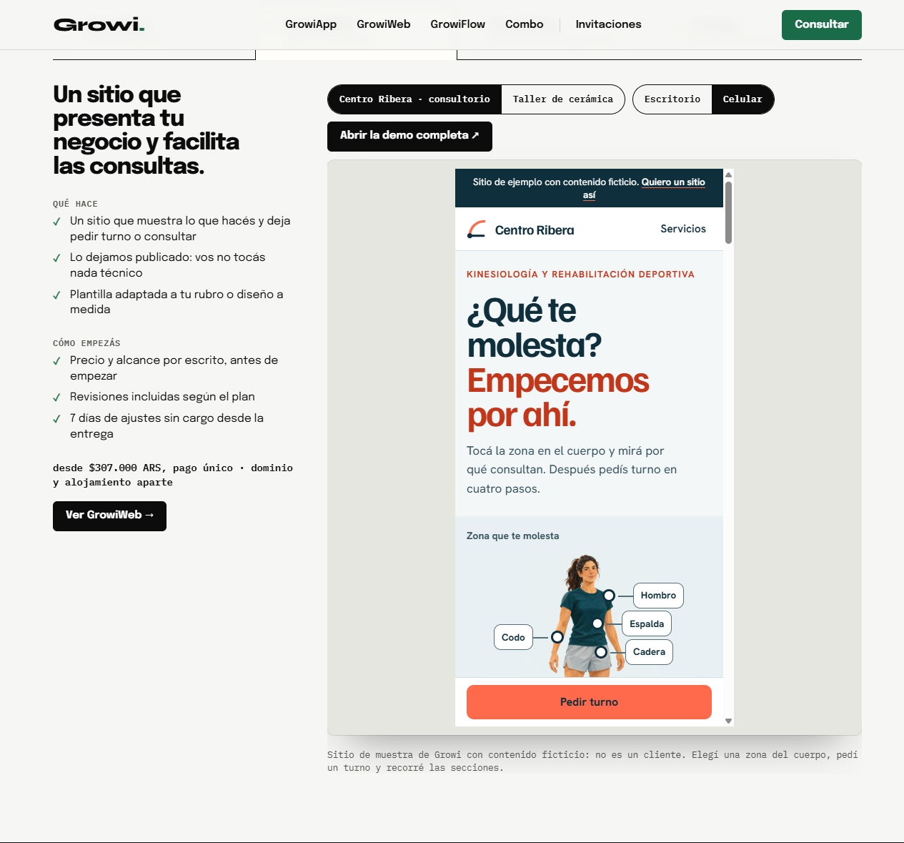
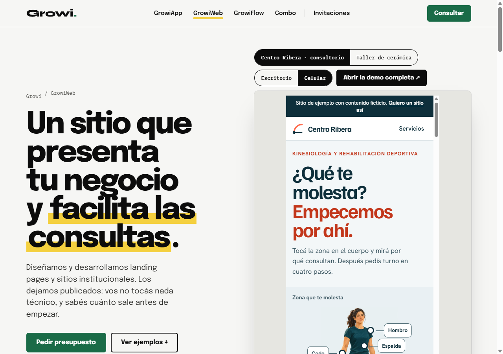
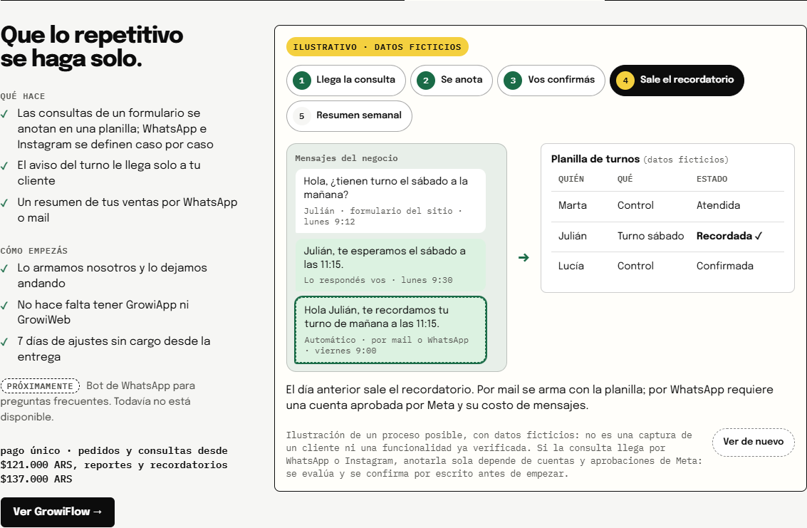
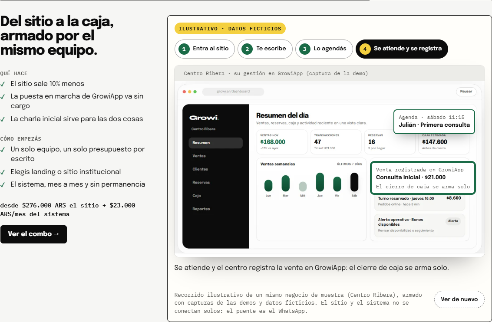
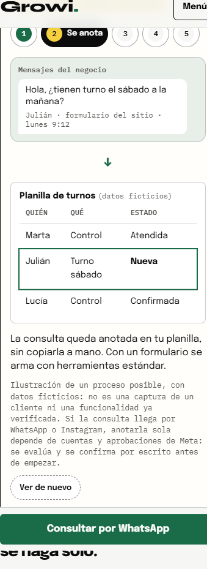
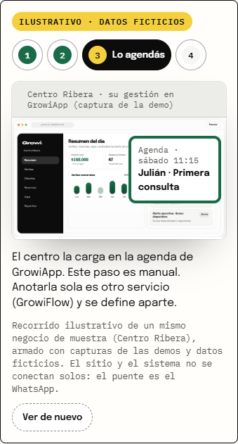
Pantalla inicial en escritorio
Pantalla inicial en móvil (390 px)


Home completa en escritorio


Las tres demostraciones, antes y después

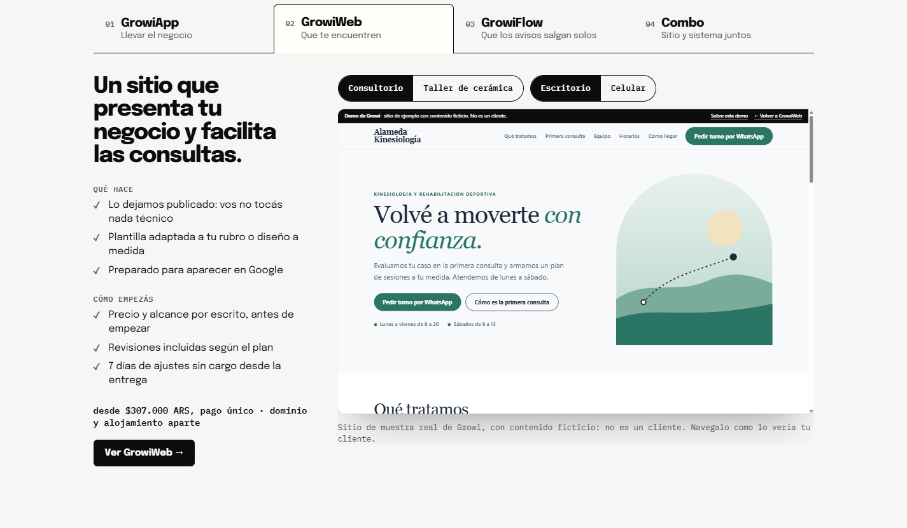

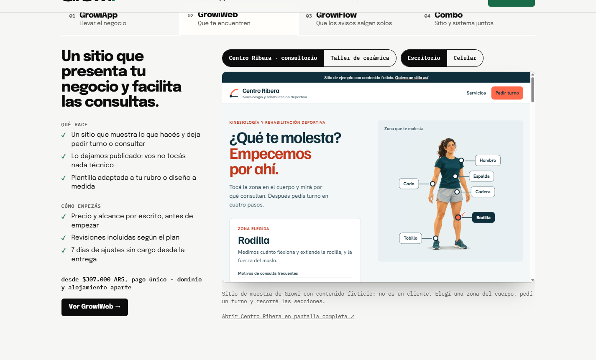


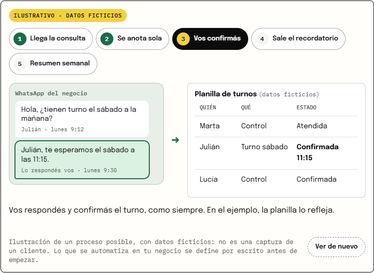


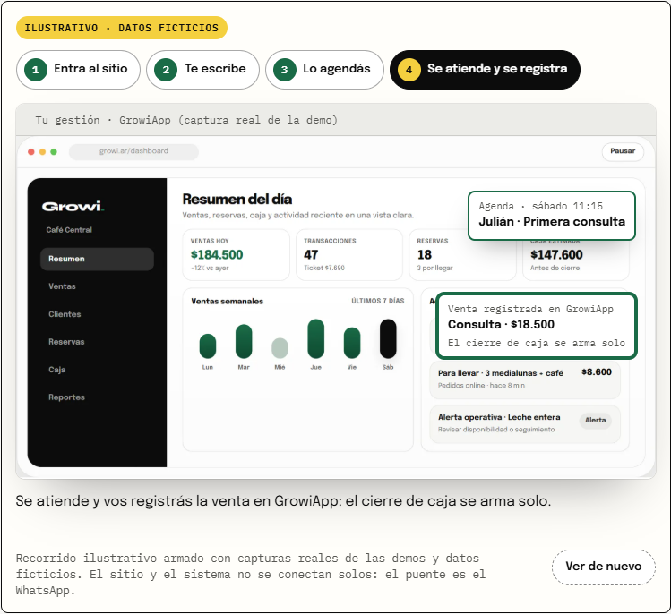
Motion explicativo: cuadros del recorrido real
Se capturó la secuencia sin tocar nada: la animación avanza sola un paso cada 2,6 segundos, una sola vez, y se puede recorrer con los botones numerados o repetir.

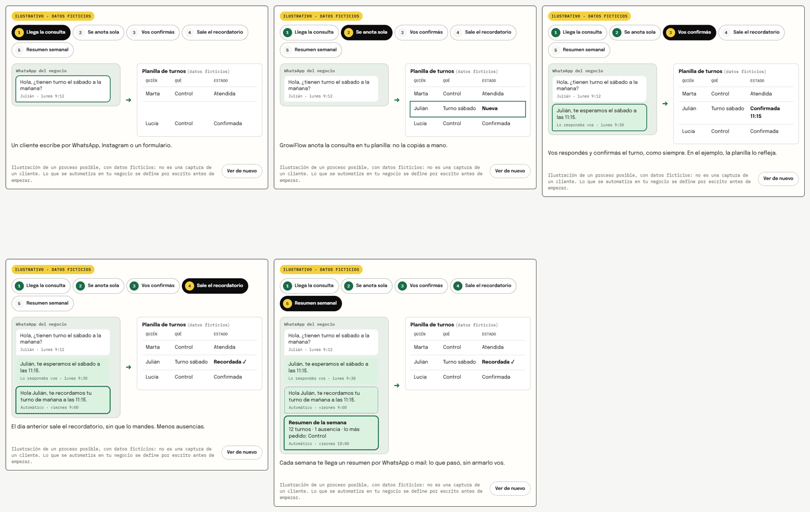

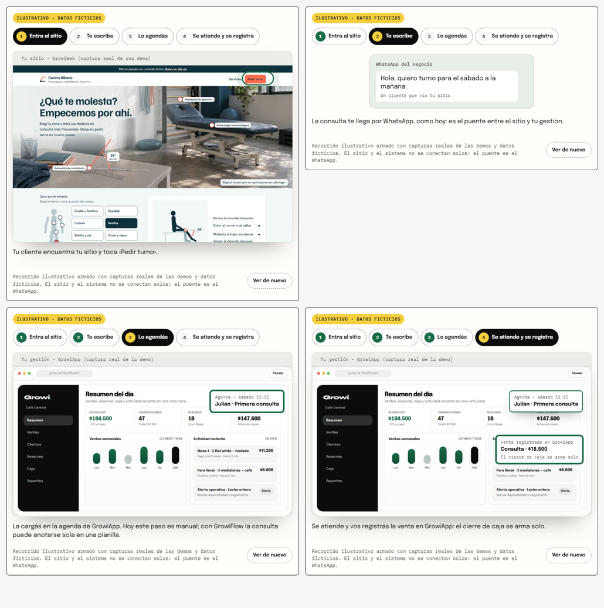